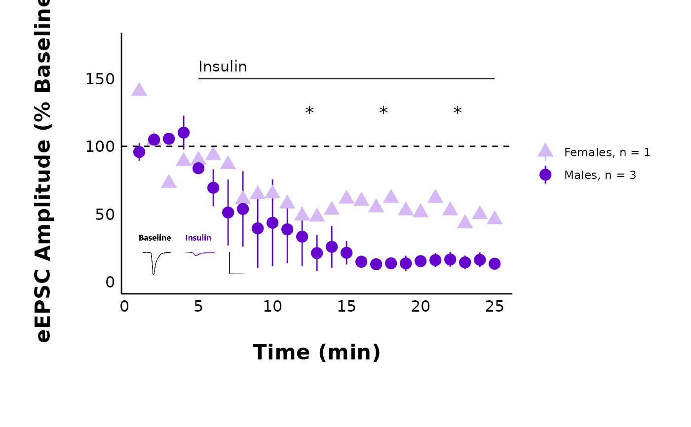

This function enables you to create a scatterplot of mean evoked (or spontaneous) current amplitude over over time in minutes. The data are summarized by treatment and sex, and averaged per minute. The data are presented as mean +/- the standard error.
Usage
plot_summary_current_data(
plot_category,
plot_treatment,
data,
current_type,
parameter,
hormone_added,
hormone_or_HFS_start_time,
include_representative_trace = "no",
representative_trace_filename,
t_test_df,
signif_stars = "no",
large_axis_text = "no",
shade_intervals = "no",
theme_options,
treatment_colour_theme,
save_plot_png = "no"
)Arguments
- plot_category
A numeric value specifying the category, which can be used to differentiate different protocol types. In the sample dataset for this package,
plot_category == 2represents experiments where insulin was applied continuously after a 5-minute baseline period.- plot_treatment
A character value specifying the treatment you would like to plot (e.g. "Control").
plot_treatmentrepresents antagonists that were present on the brain slice, or the animals were fasted, etc.- data
A dataframe containing pruned summary data for all cells. This is the third element of the list generated from
make_pruned_EPSC_data().- current_type
A character describing the current type. Allowed values are "eEPSC" or "sEPSC".
- parameter
A character value specifying the parameter to be plotted on the y-axis. For evoked currents (
current_type = "eEPSC"), the available parameters are "P1", "mean_P1" and "PPR". Note: If you select "mean_P1", you must set theprunedargument to "yes". For spontaneous currents (current_type = "sEPSC"), the available parameters are "amplitude" or "frequency".- hormone_added
A character value that will be used as the label over the line annotating the period when a hormone was applied. Examples include "500 nM Insulin", "CCK + Leptin", and "Insulin". If you applied a high-frequency stimulation (HFS) protocol instead, write "HFS", and an annotation arrow will be added instead.
- hormone_or_HFS_start_time
A numeric value indicating the time (in minutes) when a hormone was added or when HFS was applied. This will set the annotation line start point.
- include_representative_trace
A character ("yes" or "no") describing if a representative trace should be included as an overlay to the plot. This pulls from a png file stored in
Figures/Representative-Traces/". Please specify the file-name inrepresentative_trace_filename.- representative_trace_filename
A character value describing the filename of the representative trace. This should be the name of a .png file stored within the subfolder
Figures/Representative-Traces/.- t_test_df
A dataframe of t-test results, which has been generated using
perform_t_tests_for_summary_plot(). Important note! The t-test dataframe must be filtered to match the same conditions in thedataargument, or the significance stars will be misleading.- signif_stars
A character ("yes" or "no") describing if significance stars should be included as an overlay in the plot. If "yes", you must specify a dataframe containing the results of a t-test, which is generated using
perform_t_tests_for_summary_plot().- large_axis_text
A character ("yes" or "no"). If "yes", a ggplot theme layer will be applied which increases the size of the axis text.
- shade_intervals
A character ("yes" or "no"). If "yes", a ggplot theme layer will be applied which adds lightly shaded rectangles to highlight 5-minute intervals.
- theme_options
A dataframe containing theme options. See sample_theme_options for an example of what this dataframe should look like.
- treatment_colour_theme
A dataframe containing treatment names and their associated colours as hex values. See sample_treatment_names_and_colours for an example of what this dataframe should look like.
- save_plot_png
A character ("yes" or "no"). If "yes", the plot will be saved as a .png using ggsave. The filepath depends on the current type, but they will all go in subfolders below Figures/ in your project directory.
Value
A ggplot object. If save_plot_png == "yes", it will also generate
a .png file exported to Figures/Evoked-currents/Output-summary-plots or
Figures/Spontaneous-currents/Output-summary-plots, depending on the
current_type. The .png filename will be in this format:
"Summary-plot-plot_treatment-category-plot_category-file_name_ending-text_size.png".
The text_size will only be added on if you are using large_axis_text
("LARGE" will be included in the filename). The file_name_ending will be
automatically added on for spontaneous current data to specify what
parameter is plotted (e.g. "raw_amplitude").
An example filename is: "Summary-plot-Control-category-2.png" or "Summary-plot-Control-category-2_raw_amplitude.png" for spontaneous currents.
See also
perform_t_tests_for_summary_plot() which produces the significance
stars appended to the plot.
make_pruned_EPSC_data() for the function that will produce the
summary data used in this plot.
Examples
plot_summary_current_data(
plot_category = 2,
plot_treatment = "Control",
data = sample_pruned_eEPSC_df$all_cells,
current_type = "eEPSC",
parameter = "amplitude",
include_representative_trace = "no",
signif_stars = "yes",
t_test_df = sample_eEPSC_t_test_df,
hormone_added = "Insulin",
large_axis_text = "no",
shade_intervals = "no",
hormone_or_HFS_start_time = 5,
treatment_colour_theme = sample_treatment_names_and_colours,
theme_options = sample_theme_options
)
#> Warning: Removed 25 rows containing missing values or values outside the scale range
#> (`geom_segment()`).
